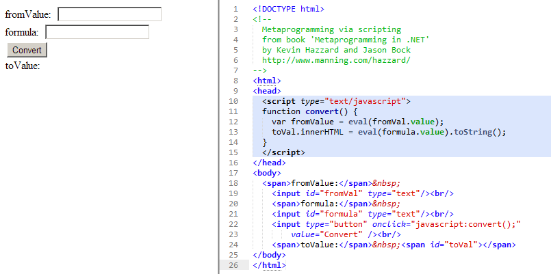
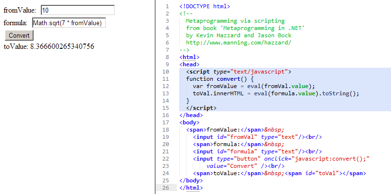
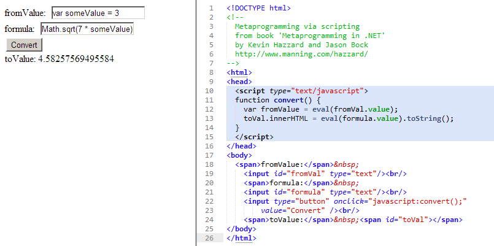

μετά: after, beyond, self, adjacent
metaprogramming: The classic definition for a metaprogram is “a computer program that writes new computer programs”
by @KevinHazzard and @JasonBock
JavaScript eval() as metaprogramming example
from Metaprogramming in .Net by @KevinHazzard and @JasonBock
Initial state
Simple multiplication
Injection values into local execution scope
"Languages are losing their classifications. No longer can we say that a language is just an object-oriented language, or just a dynamic language, because so many of them borrow from lots of different ideas
Anders Hejlsberg talk about C# 3.0
Traditionally, compilers are black boxes.Source code goes in one end, magic happens in the middle, and object files or assemblies come out the other end.
As compilers perform their magic, they build up deep understanding of the code they are processing, but that knowledge is unavailable to anyone but the compiler implementation wizards.
The core mission of the Roslyn project: opening up the black boxes and allowing tools and end users to share in the wealth of information compilers have about our code.
Bootstrapping is the process of writing a compiler in the target programming language which it is intended to compile.
Applying this technique leads to a self-hosting compiler.
Demo #01
CodeDom is a precursor to Roslyn, but is only marginally related.
Demo #02
Scripting: `eval()`-like for C# using Roslyn
Demo #03
Scripting: Roslyn Script vs. IronPython
Note about "Code-as-Data"
Note about "Dynamic" programming
Demo #06
Reflection/Inspection: Cyclomatic complexity
Use a spacebar or arrow keys to navigate
{kind=link}
{kind=link}
{kind=link}
{kind=link}
{kind=link}